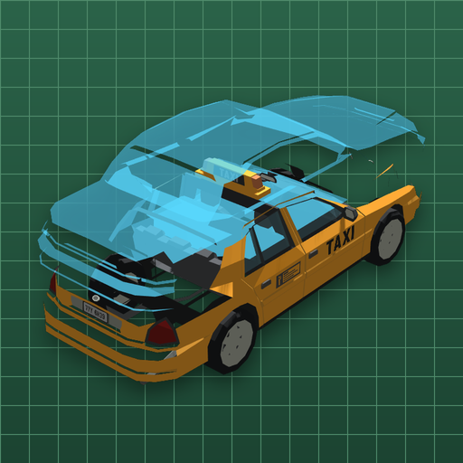

<- all projects

Model Bench
PC
Volume
Live
Build the kits. Rebuild the town.
Grandpa Walt spent forty years building Little Hollow, a model of his hometown that filled the attic, until the roof leaked. Now the family wants the attic cleared by spring, but you have found his bench log, with a story behind every building and car. Take parts from the sprue and drop them onto the glowing ghost without wasting glue on wrong pieces, then paint each part and place the model in town. 96 kits across eight districts, from Main Street to the garage, plus a Daily Kit, and one drawing of a building that was never in the real town.